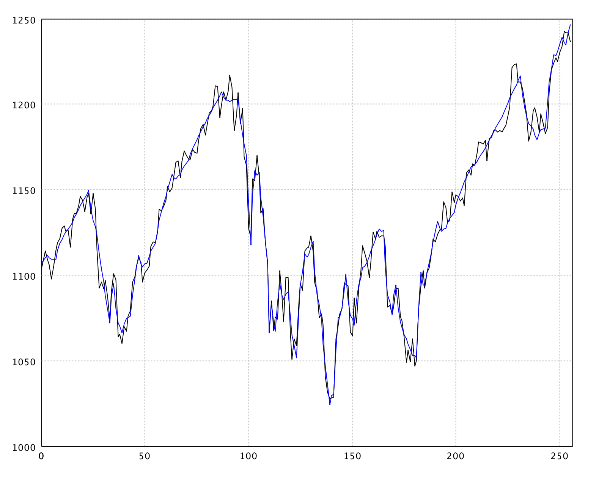

{% include "toc.njk" %}

<div class="col-md-9 order-md-first">

    <h1 id="wavelet-top" class="title">Wavelet</h1>

    <p>A wavelet is a localized oscillation that starts at zero, rises, and
        returns to zero. Convolving wavelets with a signal extracts
        time–frequency structure that a global Fourier basis cannot localize
        in time.</p>

    <p>The <em>discrete wavelet transform</em> (DWT) samples that idea on a
        dyadic grid. Like the FFT, it is a fast orthogonal transform on vectors
        whose length is a power of two (pad with zeros if needed), and it is
        invertible. SMILE’s implementation lives in
        <a href="api/java/smile/wavelet/package-summary.html"><code>smile.wavelet</code></a>.</p>

    <h2 id="filter" class="title">Wavelet Filters</h2>

    <p>Java exposes concrete filters:
        <code>HaarWavelet</code>, <code>D4Wavelet</code>,
        <code>DaubechiesWavelet</code>, <code>SymletWavelet</code>
        (least asymmetric), <code>BestLocalizedWavelet</code>, and
        <code>CoifletWavelet</code>. You can also build a custom filter with
        <code>new Wavelet(coefficients)</code>.</p>

    <p>Scala and Kotlin add a string factory <code>wavelet(filter)</code>.
        Names use a class prefix plus length:</p>
    <dl>
        <dt><code>d</code> — Daubechies</dt>
        <dd>4, 6, 8, 10, 12, 14, 16, 18, 20 (<code>d4</code> is special-cased
            via <code>D4Wavelet</code> with a different centering)</dd>
        <dt><code>la</code> — least asymmetric (symlets)</dt>
        <dd>8, 10, 12, 14, 16, 18, 20</dd>
        <dt><code>bl</code> — best localized</dt>
        <dd>14, 18, 20</dd>
        <dt><code>c</code> — Coiflet</dt>
        <dd>6, 12, 18, 24, 30</dd>
        <dt><code>haar</code></dt>
        <dd>Haar wavelet (also known as D2)</dd>
    </dl>

    <div class="code-playground glass" data-lang="java">
  <div class="playground-toolbar">
    <button type="button" class="lang-tab is-active" data-lang="java" data-pane="pg-1-0">Java</button>
    <button type="button" class="lang-tab" data-lang="scala" data-pane="pg-1-1">Scala</button>
    <button type="button" class="lang-tab" data-lang="kotlin" data-pane="pg-1-2">Kotlin</button>
    <span class="toolbar-spacer"></span>
    <button type="button" class="btn btn-ghost btn-sm playground-copy">Copy</button>
    {% include "components/playground-extra-actions.njk" %}
  </div>
    <div id="pg-1-0" class="hero-pane">
      <pre class="playground-source language-java"><code class="language-java">import smile.wavelet.*

new HaarWavelet()
new D4Wavelet()
new DaubechiesWavelet(8)
new SymletWavelet(8)          // same family as filter "la8"
new BestLocalizedWavelet(14)
new CoifletWavelet(12)</code></pre>
      <pre class="playground-output" aria-label="Expected output"><code>
HaarWavelet / D4Wavelet / DaubechiesWavelet / …
      </code></pre>
    </div>
    <div id="pg-1-1" class="hero-pane" hidden>
      <pre class="playground-source language-scala"><code class="language-scala">import smile.wavelet.*

wavelet("haar")
wavelet("d4")
wavelet("d8")
wavelet("la8")
wavelet("bl14")
wavelet("c12")</code></pre>
      <pre class="playground-output" aria-label="Expected output"><code>
HaarWavelet / D4Wavelet / DaubechiesWavelet / …
      </code></pre>
    </div>
    <div id="pg-1-2" class="hero-pane" hidden>
      <pre class="playground-source language-kotlin"><code class="language-kotlin">import smile.wavelet.*

wavelet("haar")
wavelet("d4")
wavelet("d8")
wavelet("la8")
wavelet("bl14")
wavelet("c12")</code></pre>
      <pre class="playground-output" aria-label="Expected output"><code>
HaarWavelet / D4Wavelet / DaubechiesWavelet / …
      </code></pre>
    </div>
  <div class="playground-editor" hidden></div>
</div>

    <h2 id="dwt" class="title">Discrete Wavelet Transform</h2>

    <p><code>transform</code> replaces the input array with wavelet coefficients
        in place; <code>inverse</code> reconstructs the signal. Length must be
        a power of two.</p>

    <div class="code-playground glass" data-lang="java">
  <div class="playground-toolbar">
    <button type="button" class="lang-tab is-active" data-lang="java" data-pane="pg-2-0">Java</button>
    <button type="button" class="lang-tab" data-lang="scala" data-pane="pg-2-1">Scala</button>
    <button type="button" class="lang-tab" data-lang="kotlin" data-pane="pg-2-2">Kotlin</button>
    <span class="toolbar-spacer"></span>
    <button type="button" class="btn btn-ghost btn-sm playground-copy">Copy</button>
    {% include "components/playground-extra-actions.njk" %}
  </div>
    <div id="pg-2-0" class="hero-pane">
      <pre class="playground-source language-java"><code class="language-java">import smile.wavelet.HaarWavelet
import java.util.Arrays

double[] x = {0.2, -0.4, -0.6, -0.5, -0.8, -0.4, -0.9, 0.0,
              -0.2, 0.1, -0.1, 0.1, 0.7, 0.9, 0.0, 0.3}
double[] original = x.clone()

var haar = new HaarWavelet()
haar.transform(x)
Arrays.toString(x)

haar.inverse(x)
// round-trip recovers the signal (up to ~1e-15)</code></pre>
      <pre class="playground-output" aria-label="Expected output"><code>
[-0.4, -1.3, 0.2828, -0.7071, 0.45, -0.15, -0.05, 0.65,
  0.4243, -0.0707, -0.2828, -0.6364, -0.2121, -0.1414, -0.1414, -0.2121]
      </code></pre>
    </div>
    <div id="pg-2-1" class="hero-pane" hidden>
      <pre class="playground-source language-scala"><code class="language-scala">import smile.wavelet.*

val x = Array(0.2, -0.4, -0.6, -0.5, -0.8, -0.4, -0.9, 0.0,
              -0.2, 0.1, -0.1, 0.1, 0.7, 0.9, 0.0, 0.3)
val original = x.clone()

val haar = wavelet("haar")
haar.transform(x)
x.mkString("[", ", ", "]")

haar.inverse(x)
// original ≈ x</code></pre>
      <pre class="playground-output" aria-label="Expected output"><code>
[-0.4, -1.3, 0.2828, -0.7071, 0.45, -0.15, -0.05, 0.65,
  0.4243, -0.0707, -0.2828, -0.6364, -0.2121, -0.1414, -0.1414, -0.2121]
      </code></pre>
    </div>
    <div id="pg-2-2" class="hero-pane" hidden>
      <pre class="playground-source language-kotlin"><code class="language-kotlin">import smile.wavelet.*

val x = doubleArrayOf(0.2, -0.4, -0.6, -0.5, -0.8, -0.4, -0.9, 0.0,
                      -0.2, 0.1, -0.1, 0.1, 0.7, 0.9, 0.0, 0.3)
val original = x.copyOf()

val haar = wavelet("haar")
haar.transform(x)
x.contentToString()

haar.inverse(x)
// original ≈ x</code></pre>
      <pre class="playground-output" aria-label="Expected output"><code>
[-0.4, -1.3, 0.2828, -0.7071, 0.45, -0.15, -0.05, 0.65,
  0.4243, -0.0707, -0.2828, -0.6364, -0.2121, -0.1414, -0.1414, -0.2121]
      </code></pre>
    </div>
  <div class="playground-editor" hidden></div>
</div>

    <p>A constant signal has a single nonzero coefficient (the scaled global
        mean); all detail coefficients are zero:</p>

    <div class="code-playground glass" data-lang="java">
  <div class="playground-toolbar">
    <button type="button" class="lang-tab is-active" data-lang="java" data-pane="pg-3-0">Java</button>
    <button type="button" class="lang-tab" data-lang="scala" data-pane="pg-3-1">Scala</button>
    <button type="button" class="lang-tab" data-lang="kotlin" data-pane="pg-3-2">Kotlin</button>
    <span class="toolbar-spacer"></span>
    <button type="button" class="btn btn-ghost btn-sm playground-copy">Copy</button>
    {% include "components/playground-extra-actions.njk" %}
  </div>
    <div id="pg-3-0" class="hero-pane">
      <pre class="playground-source language-java"><code class="language-java">import smile.wavelet.HaarWavelet
import java.util.Arrays

double[] c = {1, 1, 1, 1, 1, 1, 1, 1}
new HaarWavelet().transform(c)
Arrays.toString(c)</code></pre>
      <pre class="playground-output" aria-label="Expected output"><code>
[2.8284271247461894, 0.0, 0.0, 0.0, 0.0, 0.0, 0.0, 0.0]
      </code></pre>
    </div>
    <div id="pg-3-1" class="hero-pane" hidden>
      <pre class="playground-source language-scala"><code class="language-scala">import smile.wavelet.*

val c = Array.fill(8)(1.0)
dwt(c, "haar")
c.mkString("[", ", ", "]")</code></pre>
      <pre class="playground-output" aria-label="Expected output"><code>
[2.8284271247461894, 0.0, 0.0, 0.0, 0.0, 0.0, 0.0, 0.0]
      </code></pre>
    </div>
    <div id="pg-3-2" class="hero-pane" hidden>
      <pre class="playground-source language-kotlin"><code class="language-kotlin">import smile.wavelet.*

val c = DoubleArray(8) { 1.0 }
dwt(c, "haar")
c.contentToString()</code></pre>
      <pre class="playground-output" aria-label="Expected output"><code>
[2.8284271247461894, 0.0, 0.0, 0.0, 0.0, 0.0, 0.0, 0.0]
      </code></pre>
    </div>
  <div class="playground-editor" hidden></div>
</div>

    <p>Scala/Kotlin also expose functional helpers that construct the filter
        for you: <code>dwt(t, filter)</code> and <code>idwt(wt, filter)</code>.</p>

    <h2 id="shrinkage" class="title">Wavelet Shrinkage</h2>

    <p>Wavelet shrinkage denoises by thresholding coefficients:</p>
    <ol>
        <li>Apply the wavelet transform.</li>
        <li>Estimate a threshold.</li>
        <li>Hard thresholding zeros coefficients below the threshold; soft
            thresholding also shrinks the survivors toward zero.</li>
        <li>Invert the transform.</li>
    </ol>
    <p><a href="api/java/smile/wavelet/WaveletShrinkage.html"><code>WaveletShrinkage</code></a>
        uses the universal threshold
        <code>T = &sigma; √(2 log N)</code>, with noise scale &sigma; from the
        scaled MAD of the finest-level detail coefficients. The scaling
        coefficient at index 0 (global mean) is never thresholded.</p>

    <div class="code-playground glass" data-lang="java">
  <div class="playground-toolbar">
    <button type="button" class="lang-tab is-active" data-lang="java" data-pane="pg-4-0">Java</button>
    <button type="button" class="lang-tab" data-lang="scala" data-pane="pg-4-1">Scala</button>
    <button type="button" class="lang-tab" data-lang="kotlin" data-pane="pg-4-2">Kotlin</button>
    <span class="toolbar-spacer"></span>
    <button type="button" class="btn btn-ghost btn-sm playground-copy">Copy</button>
    {% include "components/playground-extra-actions.njk" %}
  </div>
    <div id="pg-4-0" class="hero-pane">
      <pre class="playground-source language-java"><code class="language-java">import java.awt.Color
import smile.math.MathEx
import smile.plot.swing.LinePlot
import smile.wavelet.*

MathEx.setSeed(19650218)
int n = 256
double[] noisy = new double[n]
for (int i = 0; i < n; i++) {
    noisy[i] = Math.sin(2 * Math.PI * i / 64.0) + 0.25 * MathEx.random()
}
double[] smooth = noisy.clone()
WaveletShrinkage.denoise(smooth, new D4Wavelet())

var figure = LinePlot.of(noisy).figure()
figure.add(LinePlot.of(smooth, Color.BLUE))
figure.show()</code></pre>
      <pre class="playground-output" aria-label="Expected output"><code>
(opens a plot: noisy series + D4 hard-thresholded reconstruction in blue)
      </code></pre>
    </div>
    <div id="pg-4-1" class="hero-pane" hidden>
      <pre class="playground-source language-scala"><code class="language-scala">import java.awt.Color
import smile.math.MathEx
import smile.plot.swing.LinePlot
import smile.wavelet.*

MathEx.setSeed(19650218)
val n = 256
val noisy = Array.tabulate(n) { i =>
  Math.sin(2 * Math.PI * i / 64.0) + 0.25 * MathEx.random()
}
val smooth = noisy.clone()
wsdenoise(smooth, "d4")   // or WaveletShrinkage.denoise(smooth, wavelet("d4"))

val figure = LinePlot.of(noisy).figure()
figure.add(LinePlot.of(smooth, Color.BLUE))
figure.show()</code></pre>
      <pre class="playground-output" aria-label="Expected output"><code>
(opens a plot: noisy series + D4 hard-thresholded reconstruction in blue)
      </code></pre>
    </div>
    <div id="pg-4-2" class="hero-pane" hidden>
      <pre class="playground-source language-kotlin"><code class="language-kotlin">import java.awt.Color
import smile.math.MathEx
import smile.plot.swing.LinePlot
import smile.wavelet.*

MathEx.setSeed(19650218)
val n = 256
val noisy = DoubleArray(n) { i ->
    Math.sin(2 * Math.PI * i / 64.0) + 0.25 * MathEx.random()
}
val smooth = noisy.copyOf()
wsdenoise(smooth, "d4")

val figure = LinePlot.of(noisy).figure()
figure.add(LinePlot.of(smooth, Color.BLUE))
figure.show()</code></pre>
      <pre class="playground-output" aria-label="Expected output"><code>
(opens a plot: noisy series + D4 hard-thresholded reconstruction in blue)
      </code></pre>
    </div>
  <div class="playground-editor" hidden></div>
</div>

    <div style="width: 100%; display: inline-block; text-align: center;">
        
        <p style="color: var(--text-muted); font-size: 0.9rem;">
            Example: D4 shrinkage on an S&amp;P 500 series (raw vs denoised).
        </p>
    </div>

    <p>Pass <code>soft = true</code> to
        <code>WaveletShrinkage.denoise(t, wavelet, true)</code> or
        <code>wsdenoise(t, filter, soft = true)</code> for soft thresholding.</p>

    <div id="btnv">
        <span class="btn-arrow-left">&larr; &nbsp;</span>
        <a class="btn-prev-text" href="statistics.html" title="Previous Section: Statistics"><span>Statistics</span></a>
        <a class="btn-next-text" href="interpolation.html" title="Next Section: Interpolation"><span>Interpolation</span></a>
        <span class="btn-arrow-right">&nbsp;&rarr;</span>
    </div>
</div>
